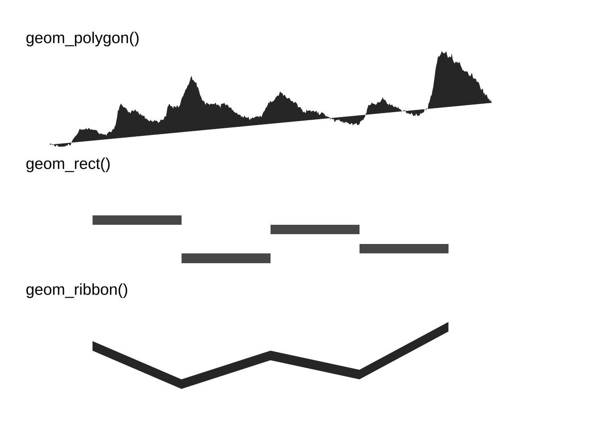
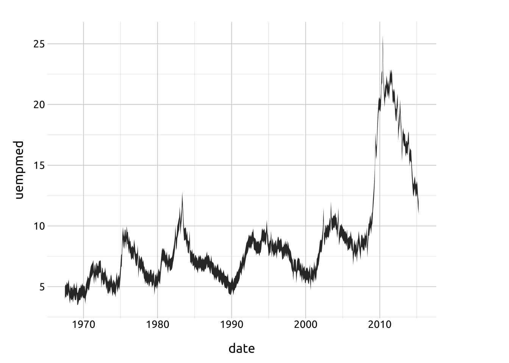
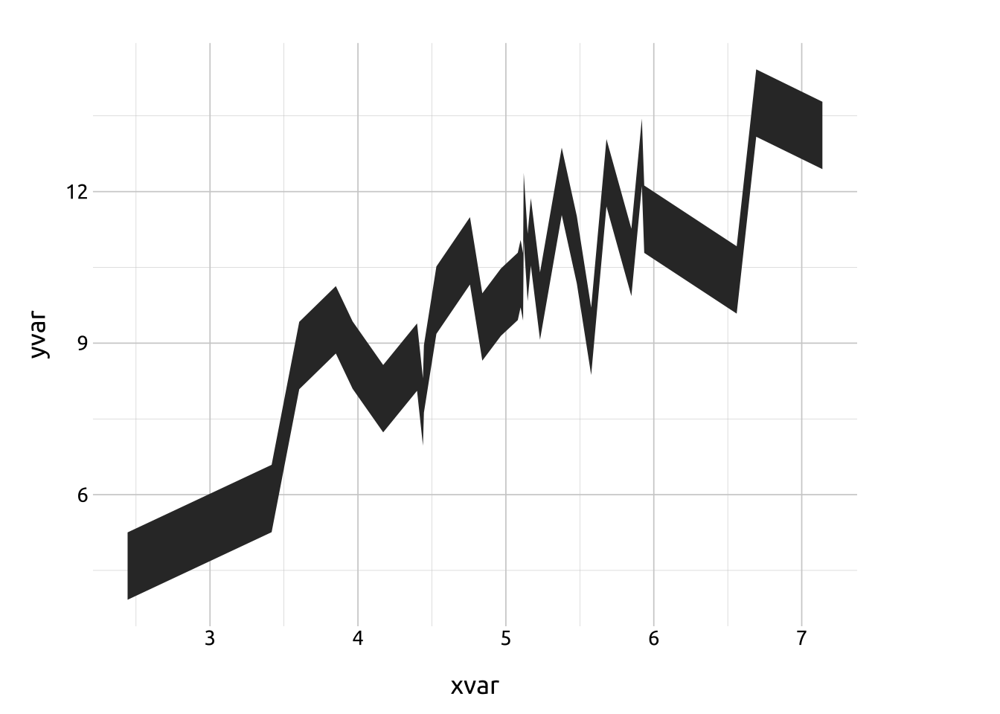
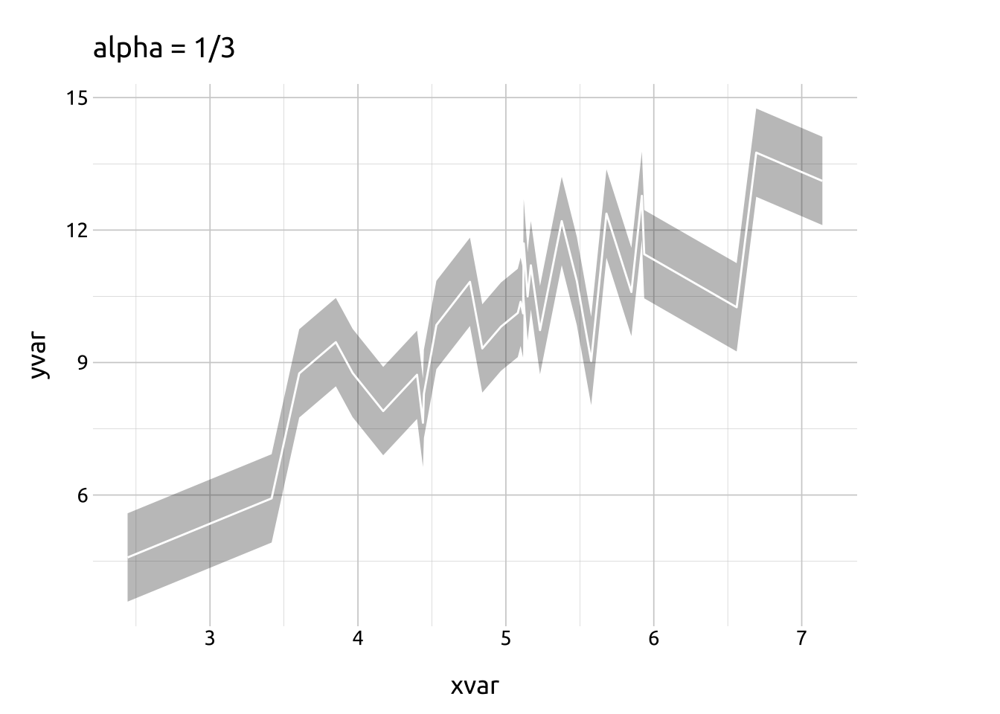
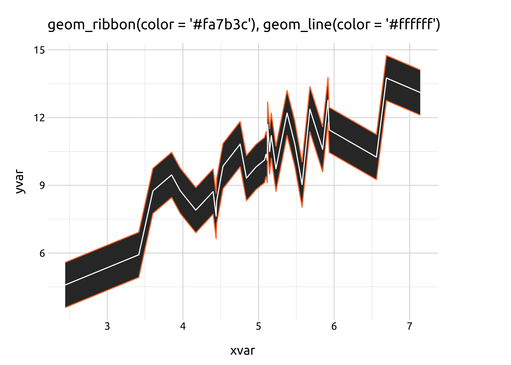
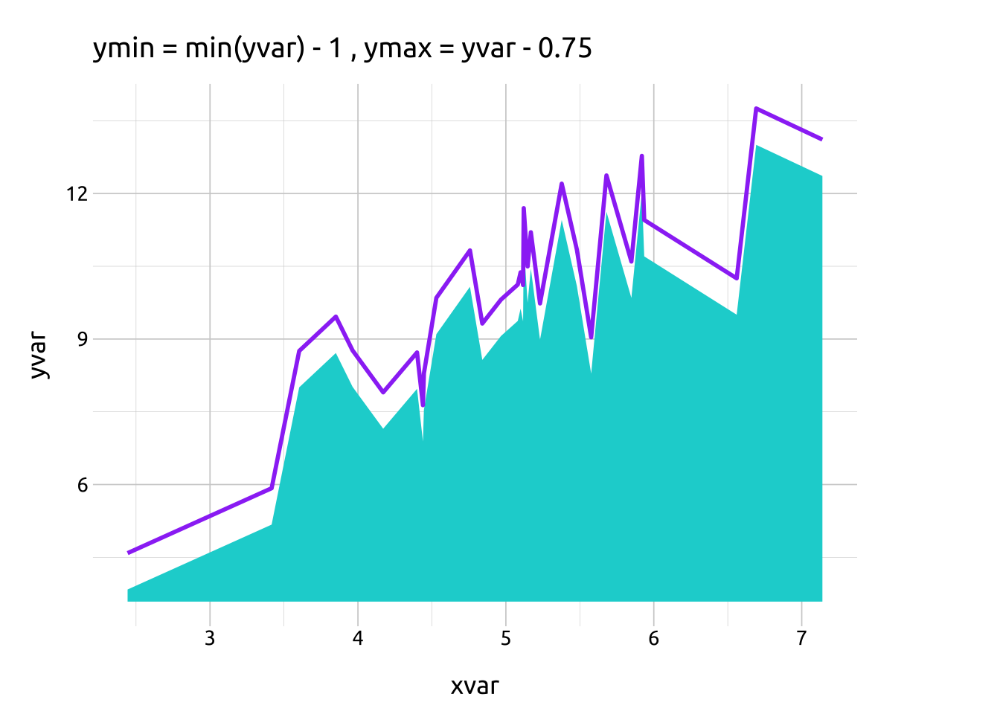
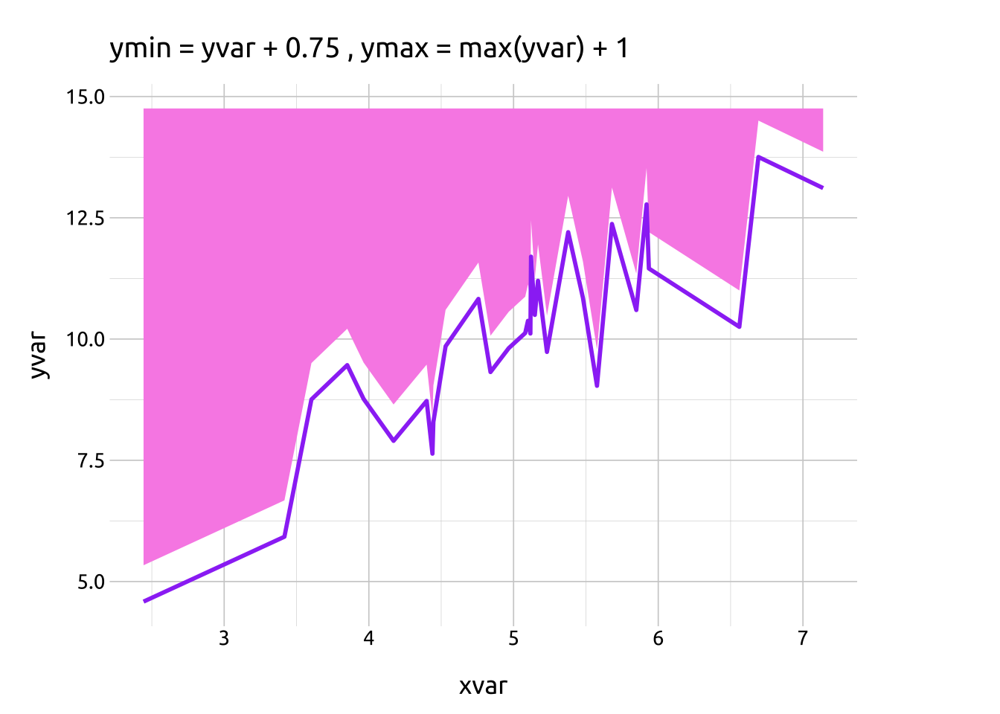
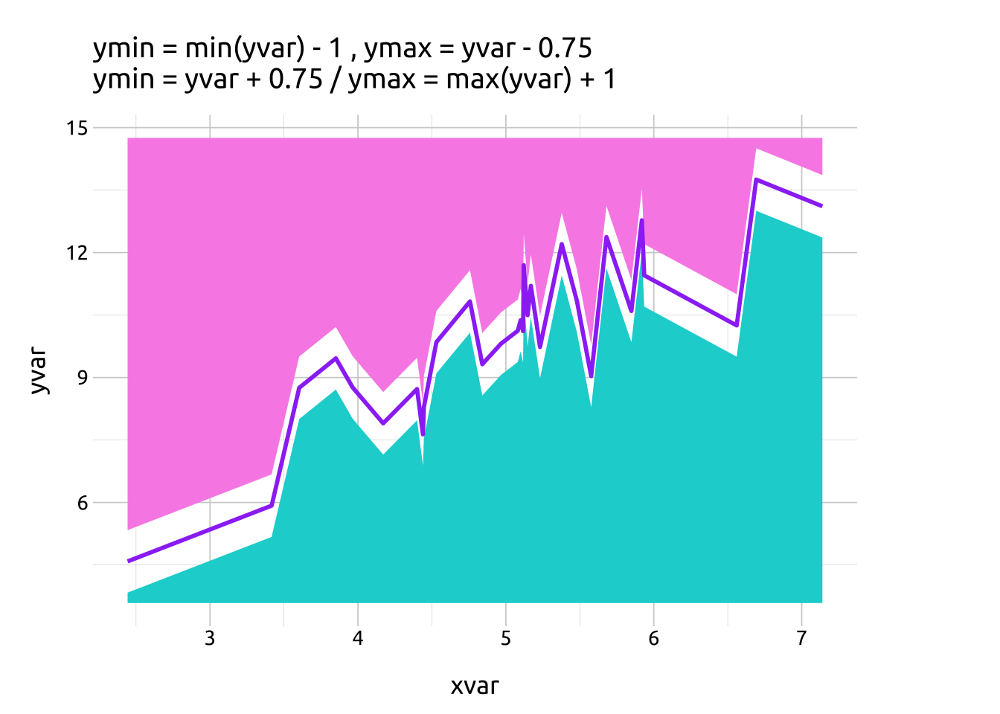
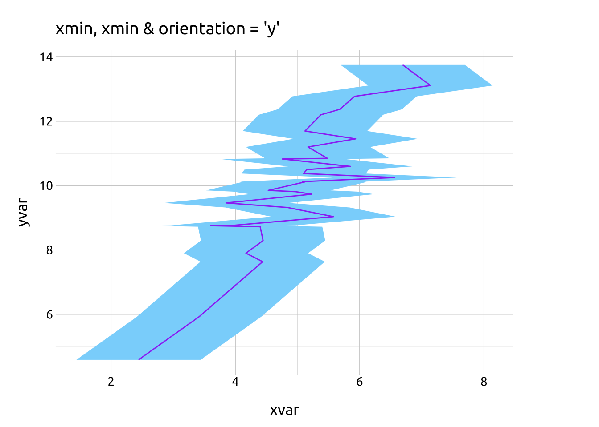

geom_ribbon()
( in development )

PACKAGES:
Install packages.
Code
install.packages("ggplot2")
library(ggplot2)DATA:
Load the ggplot2::economics data.
Code
economics <- ggplot2::economics
dplyr::glimpse(economics)Rows: 574
Columns: 6
$ date <date> 1967-07-01, 1967-08-01, 1967-09-01, 1967-10-01, 1967-11-01, …
$ pce <dbl> 506.7, 509.8, 515.6, 512.2, 517.4, 525.1, 530.9, 533.6, 544.3…
$ pop <dbl> 198712, 198911, 199113, 199311, 199498, 199657, 199808, 19992…
$ psavert <dbl> 12.6, 12.6, 11.9, 12.9, 12.8, 11.8, 11.7, 12.3, 11.7, 12.3, 1…
$ uempmed <dbl> 4.5, 4.7, 4.6, 4.9, 4.7, 4.8, 5.1, 4.5, 4.1, 4.6, 4.4, 4.4, 4…
$ unemploy <dbl> 2944, 2945, 2958, 3143, 3066, 3018, 2878, 3001, 2877, 2709, 2…geom_ribbon()
BASICS:
Code
ggp2_ribbon_base <- ggplot(data = economics,
mapping = aes(x = date))
ggp2_ribbon_base +
geom_ribbon(mapping =
aes(y = uempmed,
ymin = uempmed + 0.5,
ymax = uempmed - 0.5))
AESTHETICS:
Code
# load correlated data
corr_data <- tibble::tribble(
~xvar, ~yvar,
4.39945542597731, 8.72304029683653,
4.17063449620983, 7.90063554987357,
5.93523342401092, 11.4541978978465,
5.1469950216844, 10.497618946837,
6.5602921658934, 10.2514082668131,
3.60318467023933, 8.75455336713591,
4.44593466081161, 8.29243026086505,
5.91928050392941, 12.7755963254406,
5.37762836695204, 12.2029024379286,
5.67997074416441, 12.3725943179292,
5.08056199671095, 10.1234733135857,
7.13968234777943, 13.1122471221455,
5.47953584350558, 10.8483125442327,
5.1207247271694, 11.6978354394502,
5.16886610539834, 11.2012361563169,
2.44285898166558, 4.5859655824687,
5.23078516502559, 9.73404777362049,
3.96375780089961, 8.76414720443707,
5.84839340452937, 10.5978562919754,
3.41647188446529, 5.92403646423495,
5.09953017417824, 10.3752983817394,
5.57659911788499, 9.03573690321113,
5.11637581346714, 10.1137194319908,
3.85058930107654, 9.46184974952373,
4.43941450511781, 7.63624635401869,
4.75719629862186, 10.8272731721497,
4.5302676699022, 9.85046648295819,
6.6923491882959, 13.7537499935159,
4.8406593897924, 9.31946299458958,
4.96677080464114, 9.81206097632927)The required aesthetics are:
xorypositionsyminorymaxxminorxmax
Code
# map corr_data
ggp2_ribbon_base <- ggplot(data = corr_data)
# map x, y, ymin and ymax, and +/- adjustment
ggp2_ribbon_base +
geom_ribbon(mapping = aes(x = xvar,
y = yvar,
ymin = yvar - 0.667,
ymax = yvar + 0.667))
Optional aesthetics include:
alpha
color
fill
group
linetype
linewidth
alpha
Code
# adjustment
adj <- sd(corr_data$xvar)
ggp2_ribbon_base +
geom_ribbon(mapping = aes(
x = xvar, y = yvar,
ymin = yvar - adj, ymax = yvar + adj),
alpha = 1/3) +
geom_line(mapping = aes(x = xvar, y = yvar),
color = "#ffffff") +
labs(subtitle = "alpha = 1/3")
ggp2_ribbon_base +
geom_ribbon(mapping = aes(
x = xvar, y = yvar,
ymin = yvar - adj, ymax = yvar + adj),
alpha = 1/2) +
geom_line(mapping = aes(x = xvar, y = yvar),
color = "#ffffff") +
labs(subtitle = "alpha = 1/2")
ggp2_ribbon_base +
geom_ribbon(mapping = aes(
x = xvar, y = yvar,
ymin = yvar - adj, ymax = yvar + adj),
alpha = 3/4) +
geom_line(mapping = aes(x = xvar, y = yvar),
color = "#ffffff") +
labs(subtitle = "alpha = 3/4")


color
Code
# adjustment
adj <- sd(corr_data$xvar)
ggp2_ribbon_base +
geom_ribbon(mapping = aes(
x = xvar, y = yvar,
ymin = yvar - adj, ymax = yvar + adj),
color = "#fa7b3c") +
geom_line(mapping = aes(x = xvar, y = yvar),
color = "#ffffff") +
labs(subtitle = "geom_ribbon(color = '#fa7b3c'), geom_line(color = '#ffffff')")
ggp2_ribbon_base +
geom_ribbon(mapping = aes(
x = xvar, y = yvar,
ymin = yvar - adj, ymax = yvar + adj),
color = "#007bff") +
geom_line(mapping = aes(x = xvar, y = yvar),
color = "#89D6FB") +
labs(subtitle = "geom_ribbon(color = '#007bff'), geom_line(color = '#89D6FB')")

fill
Code
ggp2_ribbon_base +
geom_ribbon(mapping = aes(x = xvar,
y = yvar,
ymin = min(yvar) - 1,
ymax = yvar - 0.75),
fill = "#0bd3d3") +
geom_line(mapping = aes(x = xvar, y = yvar),
color = "#9d40f5", linewidth = 1) +
labs(subtitle = "ymin = min(yvar) - 1 , ymax = yvar - 0.75")
ggp2_ribbon_base +
geom_ribbon(mapping = aes(x = xvar,
y = yvar,
ymin = yvar + 0.75,
ymax = max(yvar) + 1),
fill = "#f890e7") +
geom_line(mapping = aes(x = xvar, y = yvar),
color = "#9d40f5", linewidth = 1) +
labs(subtitle = "ymin = yvar + 0.75 , ymax = max(yvar) + 1")
ggp2_ribbon_base +
geom_ribbon(mapping = aes(x = xvar,
y = yvar,
ymin = min(yvar) - 1,
ymax = yvar - 0.75),
fill = "#0bd3d3") +
geom_ribbon(mapping = aes(x = xvar,
y = yvar,
ymin = yvar + 0.75,
ymax = max(yvar) + 1),
fill = "#f890e7") +
geom_line(mapping = aes(x = xvar, y = yvar),
color = "#9d40f5", linewidth = 1) +
labs(subtitle = "ymin = min(yvar) - 1 , ymax = yvar - 0.75\nymin = yvar + 0.75 / ymax = max(yvar) + 1")


ARGUMENTS:
Code
# adjustment
adj <- sd(corr_data$xvar)
# line only
ggp2_ribbon_base +
geom_line(mapping = aes(x = xvar, y = yvar),
color = "#9d40f5") +
labs(subtitle = "geom_line()")
ggp2_ribbon_base +
geom_ribbon(mapping = aes(
x = xvar, y = yvar,
xmin = xvar - adj, xmax = xvar + adj),
fill = "#89D6FB") +
geom_line(mapping = aes(x = xvar, y = yvar),
color = "#9d40f5", orientation = "y") +
labs(subtitle = "xmin, xmin & orientation = 'y'")
